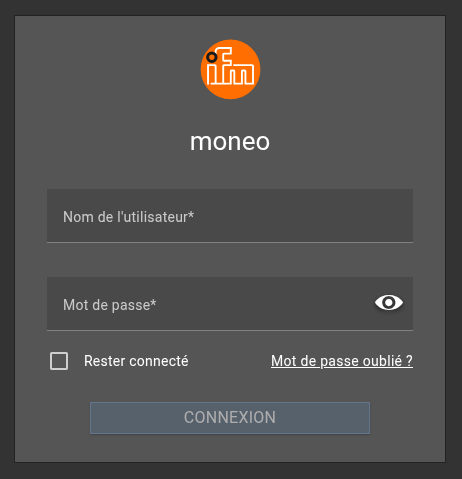
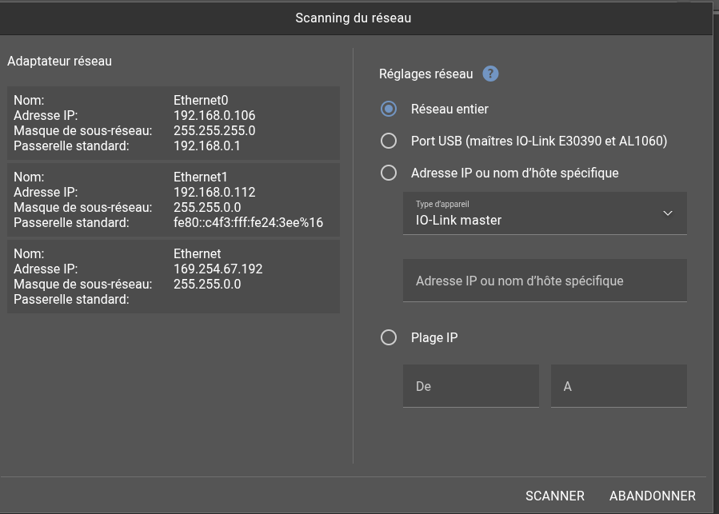
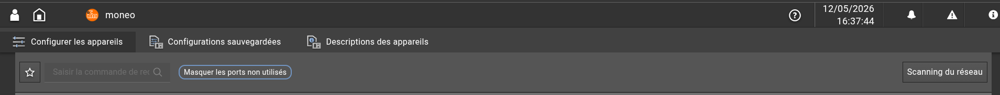
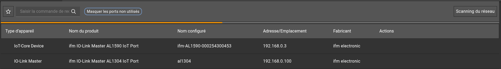
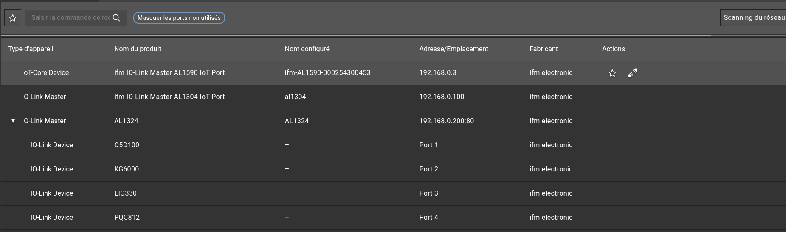
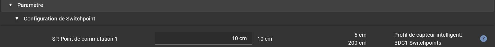
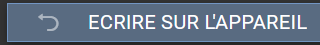
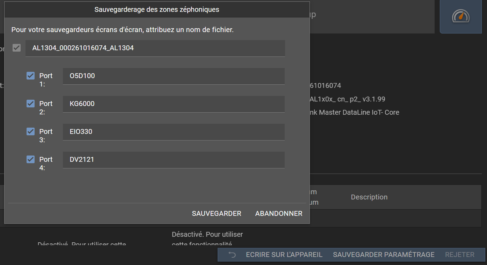

Objectif du tutoriel
Ce tutoriel décrit la configuration d'un capteur IO-Link depuis un poste connecté au réseau WiFi de l'installation. L'architecture comprend un routeur WiFi, un serveur hébergeant moneo configure et un ou plusieurs masters IO-Link reliés au réseau industriel.
Architecture réseau
Le poste de configuration se connecte au routeur WiFi. Le routeur donne accès au réseau où se trouvent le serveur moneo et les masters IO-Link. Les capteurs IO-Link sont raccordés physiquement aux ports des masters.
| Équipement | Rôle | Exemple d'adresse | Point de contrôle |
|---|---|---|---|
| Routeur WiFi | Connexion du poste opérateur au réseau de configuration | 192.168.10.1 | SSID connu, mot de passe valide, DHCP ou IP fixe disponible |
| Serveur moneo | Hébergement ou accès à moneo configure | 192.168.10.20 | Serveur joignable par ping ou par navigateur selon l'installation |
| Master IO-Link | Interface entre Ethernet et les capteurs IO-Link | 192.168.10.101 | Adresse IP connue, alimentation OK, ports IO-Link actifs |
| Capteur IO-Link | Mesure physique et transmission des données process | Port 1 du master | Câblage M12 correct, LED d'état normale, IODD disponible si nécessaire |
Prérequis
Matériel
Un routeur WiFi opérationnel, un serveur contenant moneo, au moins un master IO-Link alimenté, un capteur IO-Link raccordé au master et les câbles Ethernet/M12 adaptés.
Accès réseau
Identifiant WiFi, mot de passe, adresse IP du serveur moneo, adresses IP des masters IO-Link ou plage réseau à scanner.
Logiciel
moneo configure permet de détecter, paramétrer, visualiser et diagnostiquer des appareils IO-Link. Selon l'installation, il est lancé depuis le serveur ou depuis un poste autorisé.
Données capteur
Référence du capteur, documentation constructeur, fichier IODD si le périphérique n'est pas reconnu automatiquement, valeurs de consigne attendues.
Plan d'adressage conseillé
Pour une installation simple, placer le serveur moneo et les masters IO-Link sur le même réseau IP. Le routeur WiFi peut fournir l'accès au poste de configuration tout en laissant les équipements industriels en IP fixe.
| Élément | Configuration recommandée | Exemple |
|---|---|---|
| Sous-réseau | Réseau unique pour la configuration | 192.168.10.0/24 |
| Passerelle | Adresse LAN du routeur WiFi | 192.168.10.1 |
| Serveur moneo | IP fixe ou réservation DHCP | 192.168.10.20 |
| Masters IO-Link | IP fixes documentées et uniques | 192.168.10.101 à 192.168.10.120 |
| Poste de configuration | DHCP WiFi ou IP fixe compatible | 192.168.10.50 |
Commandes Windows utiles
Ouvrir Invite de commandes ou PowerShell sur le PC Windows utilisé pour la configuration. Les commandes ci-dessous permettent de vérifier le WiFi, l'adresse IP du poste, la communication avec le serveur moneo et la communication avec les masters IO-Link.
Identifier la configuration IP du poste
À lancer dans l'Invite de commandes Windows :
ipconfig /all
Contrôler la carte WiFi : adresse IPv4, masque, passerelle par défaut, DNS et serveur DHCP. Exemple attendu : IPv4 en 192.168.10.x, masque 255.255.255.0, passerelle 192.168.10.1.
Tester le routeur, le serveur et un master
Remplacer les IP par les adresses réelles du site :
ping 192.168.10.1 ping 192.168.10.20 ping 192.168.10.101
Résultat attendu : des réponses avec un temps en ms et 0% de perte. Si la commande indique Délai d'attente dépassé, vérifier le WiFi, le câblage, l'adresse IP et les règles de pare-feu.
Vérifier le chemin réseau
Cette commande aide à voir si le trafic passe bien par la passerelle attendue :
tracert 192.168.10.20 tracert 192.168.10.101
Sur un réseau simple, le chemin doit être direct ou passer par le routeur WiFi. Si plusieurs sauts inattendus apparaissent, vérifier le routage, les VLAN ou un VPN actif sur le PC.
Tester un port réseau depuis PowerShell
Si le serveur moneo est accessible par navigateur, tester le port HTTP ou HTTPS. Adapter le port selon l'installation.
Test-NetConnection 192.168.10.20 -Port 80 Test-NetConnection 192.168.10.20 -Port 443
Résultat attendu : TcpTestSucceeded : True. Si le résultat est False, vérifier que le service moneo est démarré, que le port est le bon et que le pare-feu du serveur autorise la connexion.
Lister le réseau WiFi connecté
Commande utile pour prouver que le poste est sur le bon SSID :
netsh wlan show interfaces
Contrôler les lignes SSID, État, Signal et Profil. Si le signal est faible, rapprocher le poste du routeur ou utiliser un point d'accès plus adapté.
Procédure détaillée
1. Mettre l'installation sous tension
Alimenter le routeur WiFi, le serveur moneo, les masters IO-Link et les capteurs. Attendre la fin de démarrage des équipements. Les masters doivent présenter une LED alimentation correcte et aucune alarme matérielle bloquante.
Contrôler le câblage : Ethernet entre routeur, serveur et masters ; câble M12 entre chaque capteur et son port IO-Link ; blindage et connectique correctement serrés si l'environnement est industriel.
2. Se connecter au WiFi de l'installation
Depuis le poste de configuration, sélectionner le SSID du routeur WiFi industriel ou atelier. Entrer le mot de passe fourni. Une fois connecté, vérifier que le poste reçoit une adresse IP compatible avec le réseau du serveur moneo.
Exemple de contrôle : si le serveur est en 192.168.10.20/24, le poste doit avoir une adresse du type 192.168.10.x avec le masque 255.255.255.0, sauf si un routage spécifique est prévu.
Commandes Windows à lancer après connexion :
netsh wlan show interfaces ipconfig /all
Contrôler que le SSID est bien celui de l'installation, que l'état WiFi est connecté et que l'adresse IPv4 appartient au bon réseau.
3. Vérifier la communication avec le serveur
Tester la joignabilité du serveur moneo. Si le site autorise le ping, lancer un ping vers l'adresse du serveur. Sinon, ouvrir l'adresse ou le raccourci prévu pour accéder à moneo configure.
Si le serveur ne répond pas, vérifier en priorité le WiFi, la passerelle, le pare-feu local, le VLAN utilisé et la présence éventuelle d'un VPN ou proxy qui détourne le trafic.
Commandes Windows :
ping 192.168.10.20 tracert 192.168.10.20 powershell -Command "Test-NetConnection 192.168.10.20 -Port 443"
Remplacer 192.168.10.20 par l'adresse IP réelle du serveur. Si moneo utilise HTTP au lieu de HTTPS, tester le port 80 à la place du port 443.
4. Ouvrir moneo configure
Se connecter à moneo configure avec un compte disposant des droits de paramétrage. L'interface peut fonctionner comme application ou via navigateur selon le déploiement du site.
Si l'accès se fait par navigateur, entrer l'adresse du serveur moneo :
https://192.168.10.20 http://192.168.10.20

5. Ajouter ou rechercher les masters IO-Link
Dans la partie de gestion des appareils ou du réseau, rechercher les masters IO-Link disponibles. Si la découverte automatique ne trouve rien, ajouter le master manuellement avec son adresse IP.
Pour chaque master détecté, vérifier la référence, l'adresse IP, l'état de communication et le nombre de ports.
Avant d'ajouter un master dans moneo, vérifier qu'il répond depuis Windows :
ping 192.168.10.101 tracert 192.168.10.101
Si plusieurs masters sont présents, tester chaque IP connue : 192.168.10.101, 192.168.10.102, 192.168.10.103, etc.



6. Contrôler les ports IO-Link
Ouvrir la vue du master et consulter l'état de chaque port. Le port où le capteur est raccordé doit être configuré en mode IO-Link lorsque l'on veut paramétrer un capteur intelligent. Les ports non utilisés peuvent rester désactivés ou configurés selon les standards du site.
Si un capteur n'apparaît pas, vérifier le port physique, le câble, l'alimentation capteur, la compatibilité IO-Link, puis relancer la recherche. Un capteur câblé sur un port configuré en entrée/sortie numérique simple peut ne pas remonter comme appareil IO-Link.

7. Charger l'identification du capteur
Sélectionner le port du capteur. moneo configure doit lire les informations d'identification : fabricant, référence produit, numéro de série, version matériel et firmware lorsque ces données sont exposées par l'appareil.
Si l'interface demande un fichier IODD, importer celui fourni par le constructeur du capteur. L'IODD décrit les paramètres, les unités, les valeurs possibles et la structure des données process.
8. Lire la configuration actuelle
Avant modification, lire les paramètres présents dans le capteur et sauvegarder l'état initial. Cette sauvegarde permet de revenir à la configuration d'origine en cas d'erreur ou de mauvais comportement machine.
Noter au minimum : unité de mesure, mode de sortie, seuils de commutation, hystérésis, temporisations, comportement en défaut, filtre ou amortissement, tag applicatif et verrouillage éventuel.

9. Régler les paramètres métier
Adapter les paramètres au besoin de l'application. Les noms varient selon le capteur, mais les réglages les plus fréquents sont les suivants :
| Paramètre | Utilité | Exemple de décision |
|---|---|---|
| Unité | Choisit l'unité affichée et transmise | bar, l/min, mm, °C selon le capteur |
| Mode de sortie | Définit le comportement électrique ou logique | PNP/NPN, normalement ouvert, normalement fermé, fenêtre, hystérésis |
| SP / rP | Seuil d'activation et seuil de retour | SP à 6,0 bar et rP à 5,5 bar pour éviter les battements |
| Filtre / amortissement | Stabilise la mesure | Augmenter si la mesure oscille, réduire si la réaction doit être rapide |
| Comportement défaut | Définit l'état en cas d'erreur capteur | Sortie sûre, maintien ou valeur de repli selon l'analyse de risque |
| Tag applicatif | Identifie le capteur dans la maintenance | PT-101, FT-204, DET-ENTREE selon la nomenclature du site |
10. Écrire les paramètres dans le capteur
Après validation des valeurs, appliquer ou écrire la configuration dans l'appareil. Attendre la confirmation de moneo configure avant de débrancher le capteur ou de changer de page.
Si l'écriture échoue, vérifier les droits utilisateur, le verrouillage du capteur, l'état du port IO-Link, la stabilité réseau et la compatibilité de l'IODD. Relire ensuite les paramètres pour confirmer que les valeurs écrites sont bien celles attendues.

11. Vérifier les données process
Afficher la valeur process du capteur dans moneo configure. Faire varier la grandeur physique si possible : pression, débit, distance, position ou température. La valeur doit évoluer de façon cohérente avec l'application.
Contrôler également l'état de diagnostic : absence d'erreur, qualité de communication stable, pas de défaut de plage, pas de court-circuit ou surcharge sur le port.
12. Sauvegarder et documenter
Exporter ou sauvegarder le projet une fois les paramètres validés. Documenter la version du projet, la date, le nom de l'intervenant, l'adresse IP du master, le port utilisé, la référence du capteur et les paramètres principaux.
Conserver une copie de la configuration validée avec la documentation machine. Cette étape est indispensable pour remplacer rapidement un capteur ou reconstruire la configuration après maintenance.

Contrôles avant mise en service
| Contrôle | Résultat attendu | Action si non conforme |
|---|---|---|
| Connexion WiFi | Poste connecté au bon SSID avec une IP valide | Revoir mot de passe, DHCP, portée radio ou VLAN WiFi |
| Accès serveur | moneo configure accessible et authentification réussie | Vérifier serveur, pare-feu, droits utilisateur et service moneo |
| Master IO-Link | Master détecté, état réseau OK | Contrôler IP, câble Ethernet, alimentation et routage |
| Capteur | Identification lue correctement sur le port prévu | Contrôler port, câble M12, alimentation, mode IO-Link et IODD |
| Paramètres | Valeurs relues identiques aux valeurs écrites | Réécrire, vérifier verrouillage, droits ou compatibilité capteur |
| Mesure | Valeur process cohérente et diagnostic sans défaut | Tester le procédé, contrôler plage, montage mécanique et câblage |
Dépannage rapide
Le master IO-Link n'est pas détecté
Vérifier que le master est alimenté, que son câble Ethernet est raccordé au bon réseau et que son adresse IP appartient à la plage accessible depuis le serveur ou le poste. Essayer un ajout manuel par adresse IP si la découverte automatique est bloquée par le réseau.
Le capteur n'apparaît pas sur le port
Contrôler le port physique, le serrage du connecteur M12, la présence d'alimentation capteur et le mode du port. Le port doit être configuré pour IO-Link si l'objectif est de lire les paramètres intelligents du capteur.
Les paramètres sont visibles mais non modifiables
Le capteur peut être verrouillé, le compte utilisateur peut manquer de droits ou le paramètre peut être en lecture seule. Vérifier aussi que le capteur n'est pas dans un état de défaut empêchant l'écriture.
La mesure process est incohérente
Vérifier l'unité, la plage de mesure, le montage mécanique, le câblage, les filtres, l'étalonnage ou l'apprentissage éventuel. Comparer avec une mesure indépendante si la valeur conditionne une mise en service machine.
Bonnes pratiques
Nommage
Utiliser des noms cohérents entre le schéma électrique, le programme automate, moneo et l'étiquetage terrain.
Sauvegarde
Sauvegarder la configuration avant et après modification. Garder une trace de la version validée en production.
Validation
Ne pas se limiter à l'écriture des paramètres. Relire le capteur et vérifier la réaction réelle sur le procédé.
Sources techniques
Références utilisées pour cadrer le tutoriel : documentation ifm sur moneo configure et fiche QMP010. moneo configure est présenté par ifm comme un outil Windows de détection, paramétrage, visualisation et diagnostic des appareils IO-Link, avec prise en charge du paramétrage via réseau Ethernet ou USB selon le matériel.